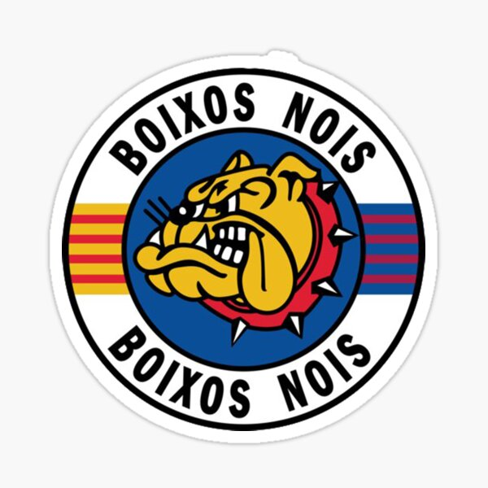

¡Bienvenido a la grada!
Esta web nace de la pasión por el Barça y por el ambiente que se vive en las gradas del Camp Nou. Aquí encontrarás un espacio para quienes crecimos cantando, animando y viviendo cada partido como algo más que un deporte. Queremos recordar la historia de la grada de animación, compartir fotos, cánticos y recuerdos, y dar voz a los aficionados que han vivido distintas épocas del club. Cada bufanda, cada tifo y cada canción forman parte de una memoria colectiva que merece ser contada. Este es un proyecto hecho por y para aficionados. Aquí caben los testimonios, los debates, los archivos de otros tiempos y las ganas de seguir animando al Barça, siempre desde el respeto. Por eso, en esta comunidad no hay lugar para la violencia, el racismo, el odio ni las amenazas. Animar fuerte y convivir son cosas compatibles.
Explora, participa y comparte tu historia. Visca el Barça!
Web no oficial, sin vinculación con el FC Barcelona.